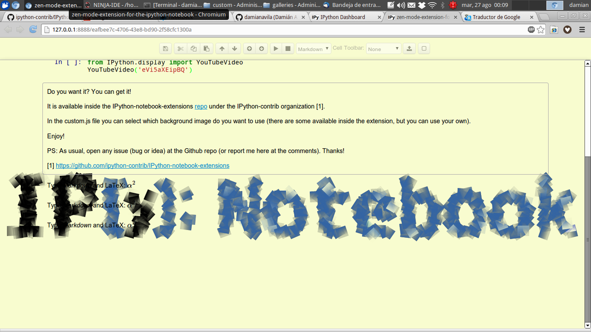

Zen mode extension for the IPython notebook
I write a lot stuff inside the IPython notebook.
And I thought it would be great to have a sort of Zen mode for the notebook...
I mean, a peaceful user interface to write my blog posts (and other stuff, of course).
So I wrote a little js extension which give me this Zen mode.
You can see some screen shots below:


And a little video showing the extension in action:
Do you want it? You can get it!
It is available inside the IPython-notebook-extensions repo under the IPython-contrib organization [1].
In the custom.js file you can select which background image do you want to use (there are some available inside the extension, but you can also use your own image ;-)).
Enjoy it!
Damián
PS: As usual, open any issue (bug or idea) at the Github repo (or report me here at the comments). Thanks!
[1] https://github.com/ipython-contrib/IPython-notebook-extensions
Don't forget this blog post is an ipynb file itself! So, you can download it from the "Source" link at the top of the post if you want to play with it ;-)
Comments powered by Disqus